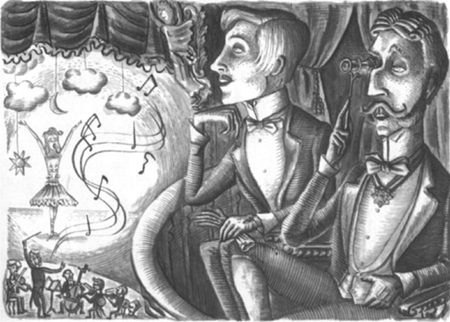
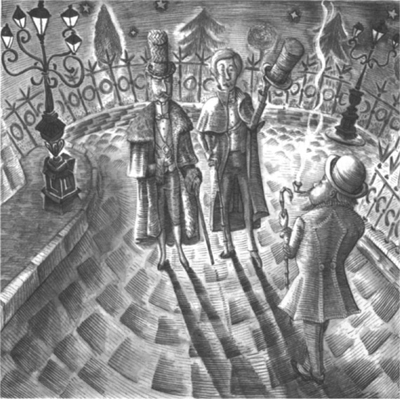

Năm 1890, Raoul lên hai mươi mốt. Anh là một chàng trai đẹp trai và sáng dạ. Mùa xuân năm ấy, anh lên Paris. Anh định sống chung với anh trai là Philippe.
Philippe khi ấy đã bốn mươi mốt tuổi. Anh là một người đàn ông giàu có và uy tín. Anh quen biết nhiều nhân vật quan trọng ở Paris. Anh quen giám đốc Nhà hát Opera. Anh cũng quen biết nhiều ca sĩ nổi tiếng.
Một buổi tối, Philippe nói với em trai:
‘Tối nay chúng ta đến Nhà hát Opera, Raoul’, anh nói. ‘Ca sĩ mà anh thích nhất sẽ diễn tối nay. Cô ấy rất nổi tiếng. Tên cô ấy là Carlotta.’
‘Ai cũng biết Carlotta cả’, Raoul đáp. ‘Cô ấy là ca sĩ rất nổi tiếng. Em muốn nghe giọng hát của cô ấy.’
‘Tối nay em sẽ được nghe cô ấy hát’, Philippe nói. ‘Và em cũng sẽ được gặp Carlotta tối nay’, Philippe nói. ‘Anh sẽ dắt em đến phòng thay đồ của cô ấy. Anh thường thăm hỏi các ca sĩ sau buổi diễn. Anh thường vào phòng thay đồ của họ.’
Hai anh em đến Nhà hát Opera. Nhưng tối hôm ấy họ không được nghe Carlotta hát. Carlotta đã không hát. Cô ấy bị ốm. Tối hôm đó, một ca sĩ khác trình diễn. Ca sĩ này là một cô gái rất trẻ. Cô có mái tóc vàng óng và đôi mắt xanh. Cô rất xinh đẹp. Và giọng hát của cô cũng tuyệt vời.
Khán giả rất phấn khích. Họ vỗ tay. Họ reo hò vang dội.
‘Ca sĩ đó là ai vậy?’, Philippe hỏi. ‘Cô ấy có giọng hát tuyệt vời quá.’
Raoul nhìn cô gái trẻ trên sân khấu.
‘Em biết cô ấy’, anh nói. ‘Anh cũng biết cô ấy chứ, Philippe! Anh còn nhớ cô gái trên bãi biển không - cô gái ở Brittany ấy? Cô ấy đã hát cho em. Cô ấy ở trên bãi biển cùng bố mình. Em đã nhặt chiếc khăn của cô ấy từ dưới biển lên. Quần áo của em bị ướt và anh đã rất tức giận với em.’
‘Đúng rồi, anh nhớ mà’, Philippe nói. ‘Bố của cô gái đó đã chơi đàn vi-ô-lông trên bãi biển. Và cô gái kia thì hát. Nhưng anh chưa từng nghe cô ấy hát ở đây, tại Nhà hát Opera. Cô ấy là một ca sĩ rất giỏi!’

Tất cả khán giả đều rất thích cô ca sĩ trẻ. Vào cuối buổi biểu diễn, họ vỗ tay và lại reo hò.
Sau buổi biểu diễn, Raoul và Philippe gặp giám đốc Nhà hát Opera.
‘Ca sĩ trẻ đó tên là gì vậy?’, Philippe hỏi.
‘Cô ấy tên là Christine’, người quản lý nói, ‘Cô ấy có giọng hát tuyệt vời. Có lần, tôi đã nghe Christine hát trên phố. Cô ấy hát rất hay. Tôi đã đưa cô ấy đến Nhà hát Opera. Cô ấy có một cô giáo rất giỏi. Cô ấy là một ca sĩ rất giỏi. Không lâu nữa, cô ấy sẽ trở nên nổi tiếng. Tối nay, Carlotta bị ốm. Tôi đã nói, “Christine sẽ hát trong buổi biểu diễn tối nay”. Và cô ấy đã hát rất tuyệt.’
‘Tôi muốn gặp Christine’, Raoul nói với Philippe. ‘Làm ơn dắt em đến phòng thay đồ của cô ấy.’
Philippe đưa Raoul đến một hành lang ở phía sau sân khấu. Có rất nhiều cửa ra vào trong hành lang này. Đó là những cánh cửa thông đến phòng thay đồ của các ca sĩ.
Có rất nhiều người bên ngoài phòng thay đồ của Christine. Mọi người đều muốn vào phòng. Mọi người đều muốn nói chuyện với Christine.
Cửa phòng thay đồ mở toang. Nhưng trước cửa có một người đàn ông đang đứng chặn.
‘Tôi là bác sĩ’, ông ta nói với mọi người. ‘Mọi người không được vào phòng của Christine. Cô ấy phải nghỉ ngơi. Cô ấy rất, rất mệt. Làm ơn đi chỗ khác.’
Những người khác đã đi chỗ khác. Nhưng Philippe lại quen biết bác sĩ đó. Anh ta nói chuyện với người đàn ông đó. Sau đó Philippe và em trai nhìn vào trong phòng thay đồ. Raoul nhìn thấy Christine. Cô đang ngồi trên một chiếc ghế. Anh mỉm cười với cô.
Đột nhiên, Christine nhìn thấy Raoul. Cô đứng dậy và bước đến gần cánh cửa đang mở.
‘Christine’, chàng trai trẻ lên tiếng. ‘Tôi là Raoul. Tôi đã gặp cô trước đây. Tôi đã gặp cô cách đây mười năm. Tôi đã gặp cô trên một bãi biển ở Brittany. Tôi đã nhặt chiếc khăn của cô từ dưới biển lên.’
‘Vâng, tôi nhớ buổi tối đó’, Christine nói. ‘Lúc đó tôi mười tuổi. Anh đã chạy ra biển. Quần áo của anh ướt sũng. Anh trai anh rất tức giận!’
‘Đúng rồi’, Philippe nói. ‘Tôi đã tức giận’. Anh mỉm cười.
‘Buổi tối đó cô đã hát một bài hát cho tôi’, Raoul nói. ‘Và bố cô đã chơi đàn vi-ô-lông. Bố cô khỏe chứ, Christine?’
‘Bố tôi đã mất vào năm ngoái’, Christine buồn bã nói.
‘Tôi đã thường nghĩ về cô, Christine’, Raoul nói. ‘Tôi muốn gặp lại cô.’
‘Tối nay tôi rất mệt’, Christine nói. ‘Làm ơn đến đây vào một ngày khác.’
‘Ngày mai tôi sẽ đến’, Raoul nói.
‘Làm ơn hãy về đi’, bác sĩ nói. ‘Christine phải nghỉ ngơi!’
Bác sĩ đóng cửa phòng thay đồ.
——
Vài phút sau, hai anh em ra khỏi Nhà hát Opera. Họ lại gặp giám đốc ở đó. Ông ta đang đứng bên ngoài tòa nhà. Ông ta đang ngước nhìn những ngôi sao trên bầu trời đêm.
‘Có chuyện gì với Carlotta vậy?’, Philippe hỏi. ‘Cô ấy bị ốm nặng lắm sao?’
‘Không, cô ấy không bị ốm’, người quản lý nói. ‘Nhưng cô ấy rất lo lắng. Và cô ấy rất sợ hãi. Bây giờ, cô ấy sẽ không hát nữa. Cô ấy đã nhìn thấy Bóng ma.’
‘Bóng ma? Anh có tin thật không?’, Philippe nói.
‘Không! Không! Tôi không tin điều đó!’, người quản lý nói. ‘Nhưng cô ấy đã nhìn thấy ai đó hoặc thứ gì đó. Có ai đó hoặc thứ gì đó đã làm cô ấy sợ.’

Philippe và Raoul chào tạm biệt người quản lý.
‘Có một bóng ma trong Nhà hát Opera sao?’, Raoul hỏi anh trai.
‘Mọi người thích những câu chuyện đáng sợ’, Philippe nói. ‘Và mọi người kể cho nhau những câu chuyện ngớ ngẩn. Họ nói về Bóng ma Nhà hát Opera.’